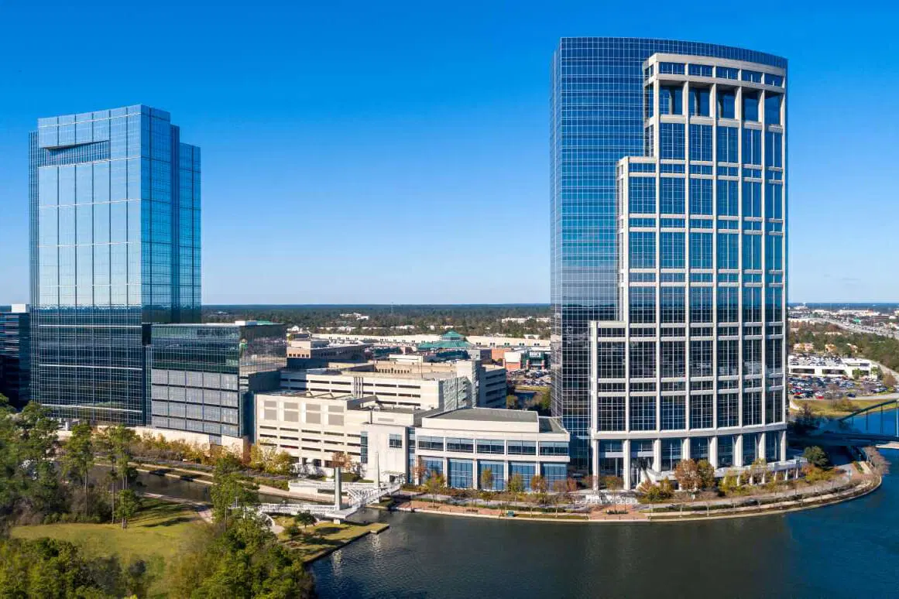

Summer Associate, HHX Innovation Hub
The Woodlands, TX
June 2 – August 1, 2025
As a Summer Associate at Howard Hughes’ HHX Innovation Hub, I contribute to forward-thinking projects that blend real estate development with emerging technologies. My focus is on creating AI-powered tools that support innovative placemaking and improve how people live and interact within communities.
I design and evaluate machine learning models using tools like TensorFlow and PyTorch to solve real-world business problems. I collaborate with cross-functional teams to integrate AI into workflows, review startup tech for scalability, and participate in brainstorming sessions to surface creative, tech-driven solutions.
The HHX Summer Associate Program brings together undergrad and grad students to work on impactful projects, attend sessions with executives, and develop critical business and technical skills. It includes site tours, training workshops, networking events, and concludes with a strategic presentation to company leadership.
This role has sharpened my interest in ethical AI and urban innovation. Working at the crossroads of data, design, and strategy has given me a clearer view of how technology can shape meaningful, human-centered spaces—and how I want to contribute to that future.
